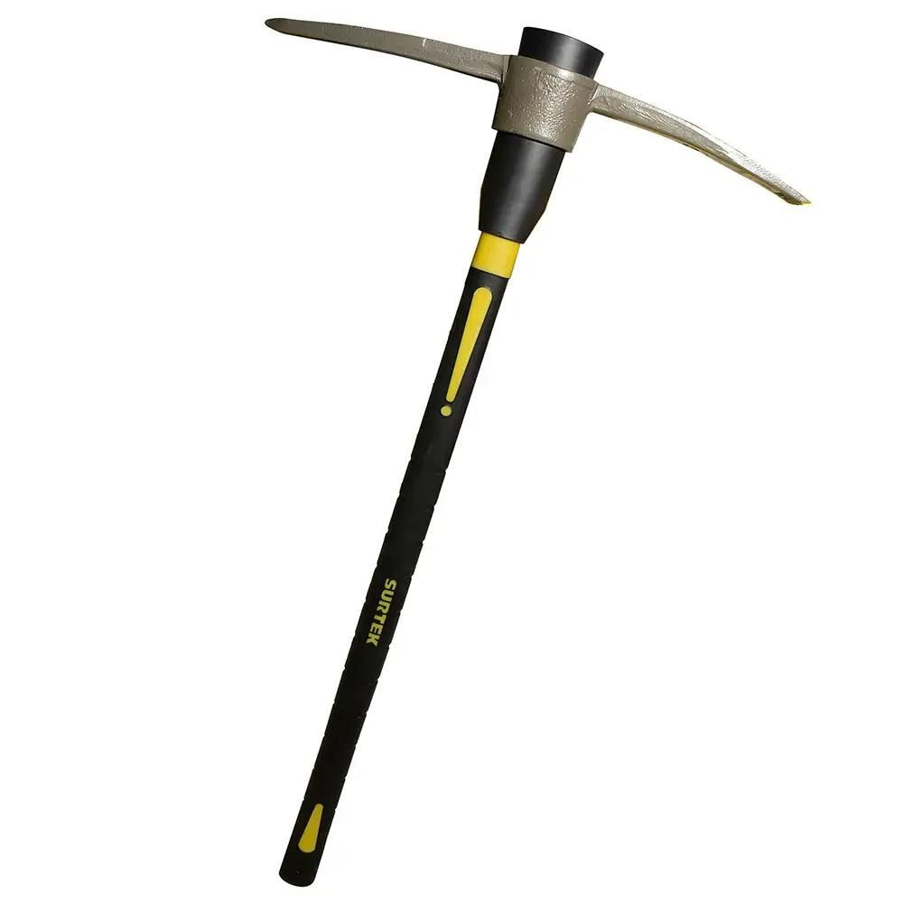
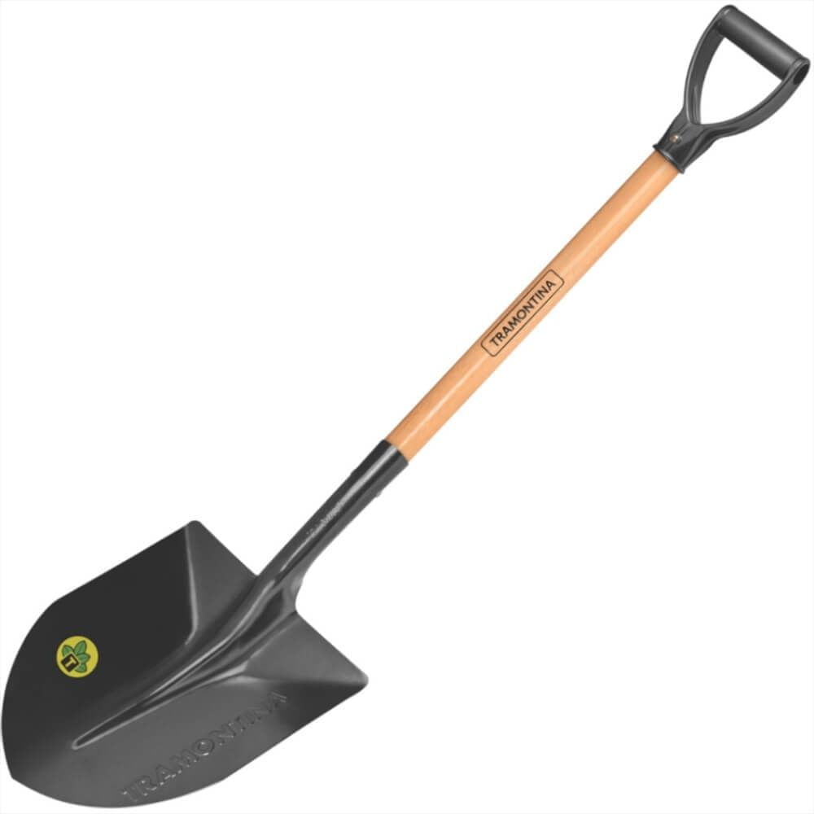
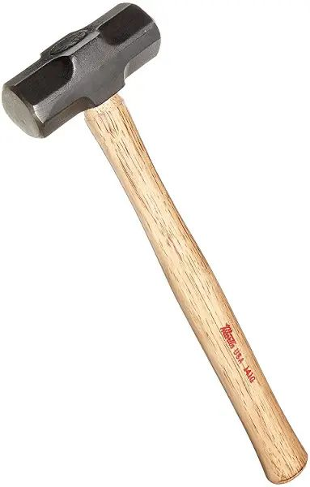

Somos una ferreteria unica e inigualable te ofrecemos el mejor servicio y la mas alta calidad de herramientas y mas.
  
Zapapico (piocha) Marca Surtek. - Precio aproximado 350.00 Lps
Pala - Precio aproximado 380.00 Lp
Almagana. - Precio aproximado 200.00 Lps
Recuerda visitarnos en nuestras Ferreteria, ¡¡¡conquita a tus clientes !!!.
Si quieres saber mas sobre repuestos y herramientas recuaerda visitarlos en El Rosario Macuelizo Santa Barbara, frente al paque..
Contactarnos al: 9587-0643
Siguiente pagina Siguiente pagina Siguiente pagina